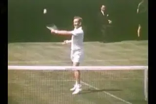
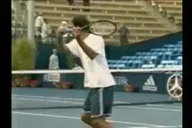
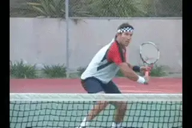
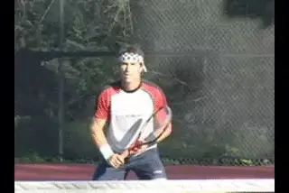
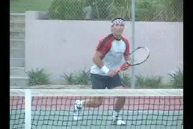
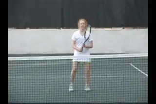
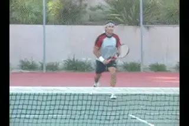
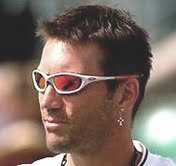

Developing World Class Volleys - Tha Backhand Volley¶
Developing World Class Volleys
The Backhand Volley
Pat Cash Last month we took a look at the fundamentals on the forehand volley - as well as some common misconceptions that hold players back. (link.) Now let's do the same on the backhand volley and see how you can develop world class technique for yourself.

What are the fundamentals of a world class backhand volley?
As with the forehand, I strongly believe that on the backhand volley you have to really hit through the ball. If you go back to the days of the great Australians who played with wood rackets, you'll see this is how they volleyed. I count myself lucky that these are the players that I grew up watching and learned from.
They had to have great technique, because without it, the ball simply didn't go anywhere. Compared to most modern volleyers, the great volleyers of the past would swing much more through the line of the shot. So you'd see players like Rod Laver take a very aggressive forward swing when possible.

Rod laver: wood racquet volleying through the line of the shot.
Today, however, with the modern rackets, players can get away with a lot and still put the ball somewhere in the court. They can make off center contact without getting properly positioned for the shot. So in the modern game, ironically, it may be easier to volley, but the volley is far less effective.
Probably the biggest mistake is that modern players have a tendency to chop down through the shot. Even the great Pete Sampras had a problem with that on occasion. He used to chop down a bit too severely at times on the backhand volley and not hit through it.
This excessive downward chop makes it's very difficult to penetrate the court and hit winning volleys, especially because the racket and the strings have made it so much easier to hit topspin passing shots.
What I want to show you in this article is the fundamentals for hitting through the ball solidly - fundamentals that are even more critical today, if you want to volley effectively.
The Differences

Modern volleyers, even the great Pete Sampras, sometimes hit too much downward and not enough through.
[There is one obvious difference between the forehand and the backhand volley, and this is the [position of the hitting shoulder.]] [[When you make a proper turn on] [the backhand volley that puts your right shoulder in position automatically].] That's compared to [the forehand where [your right shoulder is behind and] [you have to rotate it forward to the contact.]]
Continental Grip
For me, it's a continental grip on the backhand side. I don't think I really change the grip at all from ball to ball on the backhand volley. I'm not against it, in theory I think changing the grip for a higher ball, going to a little stronger grip with the hand more on top can be a good idea. Or going more to a forehand grip for a drive volley, I'm not against that at all. I think it makes complete sense.
Because there is less body motion in comparison to the forehand, the backhand volley is actually quite simple. I think this makes it a bit stronger and a bit steadier. Generally speaking, the backhand volley is a little bit safer among top level players, and probably at the club level also if players have decent technique.
After the shoulder turn the key is to hit through the ball. The racquet head can't move too sharply downward or the ball will lack pace and float.

The shoulder turn and the motion of the arm and racquet forward through the shot.
In this way [the backhand volley is very much like the slice backhand approach] - [it's a more compact version with a slightly smaller swing.] There is some high to lower action, but most of the swing has to be forward and through the ball.
The wrist positioning is also much easier on the backhand volley. It's easier to keep the wrist in a strong, cocked position. That's a bit harder on a forehand volley.
On good backhand volleys the shape or structure of the arm and the racquet stays relatively the same on the forward swing. You just move that whole structure from the shoulder. You can just go straight through and hit cross court, or by changing the position of the elbow, you go down the line or inside out.
You do the same thing on the emergency volley when the ball is hit directly at you - by pulling the elbow across the body you get the racket head in position and the shape between the arm and the racket stays relatively the same.

The elbow moves from the player's left to right, creating the inside out.
Inside Out
The slightly trickier backhand volley is the inside out one where you do have to cut slightly inside out, from the player's left to right. [You can't really do that properly unless you drop the head of the racquet. But again you do this mainly by maneuvering the elbow. That's what lowers the racket head.]
This contradicts the old misconception of bending as far down as possible when the ball is low, with the back knee scrapping the ground. Now you can come across the body inside out with slice. [You get the inside out drift that way, and that's a very deadly volley].
Compared to the forehand, there's usually less wrist manipulation to get the racquet underneath the ball on low volleys. As we saw in the first article, on the forehand volley you need to manipulate the wrist and loosen the hand up, which can make it difficult to control the ball.

The body stays sideways with contact slightly in front.
The classic example is Tony Roche's backhand volley which I saw growing up, when he was still playing, and then later when as when he became a coach. He always had the same wrist to racquet position, and he really moved the volley around by positioning his elbow higher or lower, or wherever he needed to get the racket head in the right position.
In Front?
We saw that the idea of hitting the volley far in front on your body was a misconception on the forehand. And it's true on the backhand as well. This is because the arm and racket are moving forward from the shoulder and keeping their shape.
Because of the positioning of the front shoulder, the backhand is hit slightly further in front than the forehand. But at most, the contact is a few inches further in front of the body.
[At times, players will extend the elbow until it is straighter or even straight at contact.] But if you move too far out front you will lose the position of the shoulder and the relationship between the racket and wrist, and this will make the volley too weak to be truly effective.

Get closer to the ball with the left foot and at times hit open or semi-open.
Stances
The other big misconception on the backhand volley, similar to the forehand, is that you should try to step across your body with the front foot. This takes away power, in my opinion, and limits where you can go with the ball. If you take a sideways lunging step, you can really only go crosscourt.
It's hard to keep your balance and almost impossible to hit the ball inside out. [The other disadvantage of cross stepping is that it takes an extra recovery step to get back in position]. I think this is a common mistake for amateur players and for professionals alike.
What players need to concentrate on is getting their left foot closer to the ball on the backhand volley. Many times you will want to hit the backhand volley with a semi-open or even an open stance. From there you can actually push off with the back leg through the shot.
That's not always possible, of course. If the ball is so wide that you need to lunge, yes, stick your leg across. But where possible, try to position with the back foot and keep on balance.
 Tony Roche and Stefan Edberg: two of the greatest backhand volleys.
Tony Roche and Stefan Edberg: two of the greatest backhand volleys.
One Handed History
If you look at the history of the game you can't really argue the fact that most of the great volleyers hit the backhand with one hand. One handed backhand players tend to have great slice groundstrokes and approach shots, and basically, a backhand volley is just a slightly more compact version of an approach shot. Stefan Edberg is probably the best backhand volleyer I've ever seen. John McEnroe's backhand volley was exceptional as well.
For me, though, Edberg's backhand volley raised the bar. When I first played him, it seemed that every single backhand volley was a clean winner. He had the hardest backhand volley I'd ever seen. And I went, wow, I need to up my game here a little bit and improve, hit the backhand volley a little harder. So watching and playing against Edberg really motivated me to improve.

Junior players have a hard time letting go and often chop down.
Junior Players
I think one of the things that a lot of the young players have a problem with is really chopping down quite severely coming from too high a position. This is a real problem with young players because of the almost complete dominance of the two-handed backhand.
You tend to see a lot of fairly ugly backhand volleys from kids with two hands. They tend to have a tough time taking one hand off the racquet.
For some kids, it's just a matter of getting the strength in the arm. I used to keep a squash ball in my pocket at school and just go around squeezing that. I squeezed that for hours to strengthen up my forearm. I'd just hit hours and hours against the wall whenever I could - just hit backhand volley, backhand volley.
It's important for kids particularly to not worry about having to try and hit the ball hard and just consistently work on the technique and realize that strength will come. The pace on the backhand volley will come with confident movement.

Power comes from moving forward and meeting the ball with solid arm position.
Forward Movement
As I said about the forehand side, forward movement or constant movement is absolutely necessary to execute the volley well in match play. As I coach I never have players do volley drills where they are standing still.
Instead of making a cross step across, take a half a step to the left with the outside foot closest to the ball. Volleys are a lot of little half steps. You see
If you can always be moving forward and just meet the ball with a strong solid arm, then the ball is going to get a fair bit of pace, you really don't need to take a big swing at all if you hit the ball in the center of the racquet. But you've got to start easy, focus on the technique, and hit through the ball, rather than chopping.

Pat Cash is an elite player in tennis history,
singles and doubles titles over a 15 year
career. In the early 1980's he was the number
one junior player in the world, winning at both
Wimbledon and the U.S.Open. In 1987 he won the
men's singles title at Wimbledon defeating
Mats Wilander, Jimmy Connors, and, in the
final, Ivan Lendl, a match considered one of
the greatest examples of attacking tennis ever
played in a Grand Slam final. Today he
continues to compete successful on the senior
tour. We are thrilled to have Pat as a
contributor to Tennisplayer.net!
Visit Pat's official website at